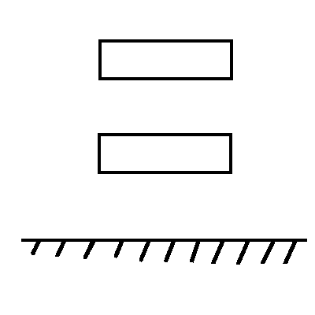

Taught by: Dr. John Conklin
Taken: SS 2016
Dynamical Systems - behavior at present depends on input forces applied in the past and initial conditions (system with memory)
Class will focus on Linear Constant Coefficient Ordinary Differential Equations (LCCODE's)
Guidance, Navigation and Control are three separate topics
Sometimes the focus of the work should be on changing the plant rather than implementing more complex control logic
Mechanical Systems
|  |
Electrical Systems
Review of Laplace Transforms (LT)